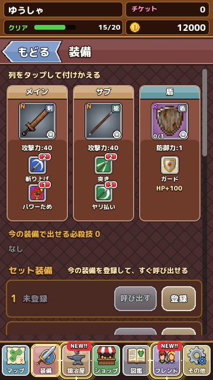

剣・槍・槌の使い分け
3 種類の武器の特徴と、メイン・サブの組み合わせ方を解説します。 更新：2026-11-13
3 種類の武器
武器は剣・槍・槌の 3 種類です。どの種類にも弱いスキルから強いスキルまでそろっていますが、得意なことには傾向があります。
- 剣：手数とバランスがよく、スキルのつなぎで必殺技を出しやすい種類です
- 槍：一撃の鋭さが持ち味で、遠くから突くスキルや、急所をねらうスキルが多くあります
- 槌：動きは重いものの、一撃が大きく、敵をスタンさせる力にすぐれています
このほか、足技のスキルだけを持つめずらしい武器もあります。手に入れたら、どんなスキルが入っているか確かめてみてください。
メインとサブ
戦いには、メインとサブの 2 本の武器を持っていけます。武器の特別な効果（攻撃力が上がる、特定の属性が強くなる、など）は、メインの武器のものだけが働きます。強い効果を持つ武器はメインに、組み合わせの必殺技に使う武器はサブに、と役割を分けるとうまくいきます。
フレンドから武器を借りると、3 本目の武器としてレンタルの欄が使えます。レンタルの武器でも必殺技を出せるので、自分の手持ちにない組み合わせを試すチャンスです。
装備セットを使いこなす
装備の画面では、メイン・サブ・盾の組み合わせを「装備セット」として 15 個まで保存できます。エリアごとに敵の弱点がちがうので、「竜に強いセット」「ゴーレムに強いセット」のように作っておくと、出発前の切りかえが一瞬で終わります。セットには 8 文字までの名前をつけられ、あとから名前の変更や削除もできます。

武器の探し方
武器は、STAGE の宝箱、ショップのガチャ、ボスを初めてたおしたときのごほうびで手に入ります。エリアのボスを初めてたおすと、そのボスにちなんだ武器がもらえることが多いので、新しいエリアに着いたらまずはボスを目指しましょう。くわしくは ショップとガチャのページ へ。
レア度について
武器と盾には N・N+・R・R+・SR・SR+ などのレア度があり、先に進むほど上のレア度が手に入るようになります。同じレア度の中でも、攻撃力が高いもの、会心が出やすいもの、スタンを取りやすいもの、特別な効果を持つものなど性格がちがいます。レア度が高いほど強いのは確かですが、敵の弱点に合ったレア度の低い武器のほうが活躍することもよくあります。
武器の効果の例
- 特定の属性の攻撃が強くなる
- 弱点をついたときのダメージがさらに上がる
- 会心の一撃が出やすくなる
- スタン値がたまりやすくなる
効果はメインの武器のものだけが働きます。武器の詳細画面では、効果の説明と、その武器 1 本で出せる必殺技も確かめられます。